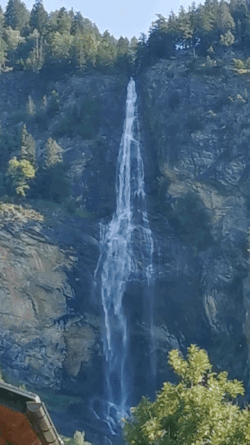

GIF Format Example

About This Image
This animated GIF is of a waterfall in Carinthia. Carinthia is in the south of Austria.
Why GIF Format?
GIF is the perfect format for displaying the majesty of a waterfall because of its lossless compression & ability to do small animations. In this case a video is not necessary for you to understand the scale of the waterfall. Please click the thumbnail to see the full-sized image.
Image source: User:Mateus2019, CC BY 3.0 DE, via Wikimedia Commons